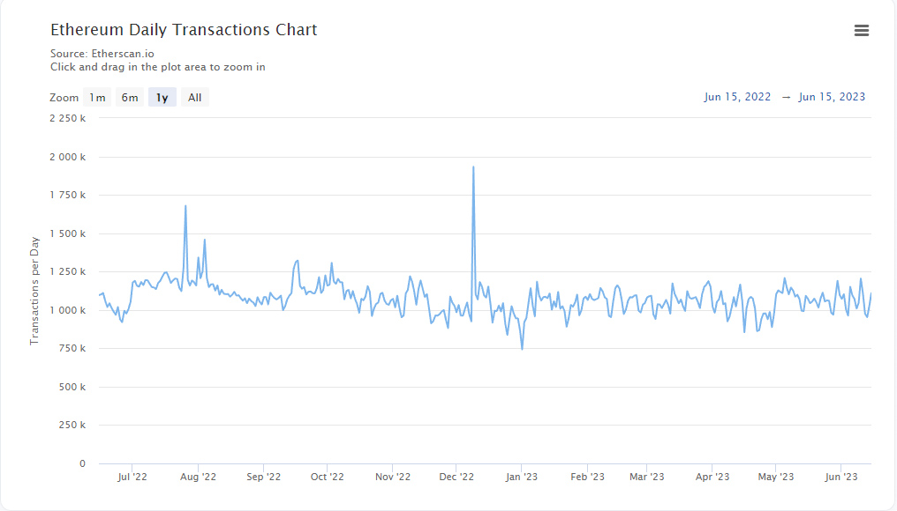
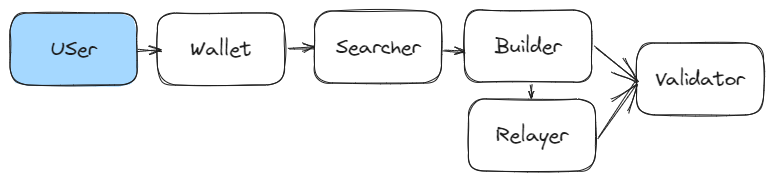

One common question that often arises in discussions about crypto is the significance of a blockchain in terms of practical use. The best example to address this concern is arguably the most popular one: Ethereum. As the leading Proof of Stake blockchain, Ethereum excels in terms of usage and development, this is evident when we look at the daily transaction volume. In the last 1.5 years, Ethereum has averaged approximately 1.1 Million transactions per day.
 Source : Etherscan.io
When you interact with Ethereum using your wallet, the process behind the scenes is abstracted, which contributes to a positive user experience. When driving a car, we don't necessarily need to comprehend the inner workings of the engine; it simply works and the consequences of not knowing are relatively low. However, when it comes to crypto, a different mindset is useful —familiarising yourself with how protocols operate is crucial to grasp the fundamentals of user empowerment, security, privacy, and decentralisation.
There's an assumption that when you click a button, the blockchain verifies your transaction in a trustless way, but what actually happens?
Let's step into the dark woods of the MEV Supply Chain
Behind the scenes, immediately after you submit a transaction, the “MEV supply chain” kicks in. MEV stands for “Maximal Extractable Value”, it’s important to understand MEV since it affects the security and stability of not only Ethereum but most blockchain networks.
Within this supply chain there are multiple components that will take your transaction and do all sorts of things with it, but what are they and how does it work? For the sake of simplicity we can break this supply chain into 5 distinct entities. Lets walk through an example:
- Wallet - Your wallet securely stores your keys which you use to sign transactions, for example purchasing an NFT requires you sign the transaction with your key. Once signed your transaction is then sent to the network and held in what's called the mempool. The mempool serves as a temporary storage area on the Ethereum network, holding your transaction until processed.
- Searchers - Searchers in the mempool will seek out your transaction, essentially discovering your transaction and ordering it with other transactions into a bundle.
- Builders - Builders take the transaction bundles built by the Searchers and optimise them to be included in a block. Builders assemble blocks to maximise value and efficiency and prepare them for validation.
- Relayers - Relayers often serve as intermediaries between Builders and Validators, they verify the integrity and authenticity of the blocks before they are submitted for validation. They essentially provide a layer of trust between Builders and Validators.
- Validators - Validators run the Ethereum consensus mechanism, they receive the blocks from Relayers (or directly from builders), verify them, propose them to the network, and attest to new blocks. If everything checks out then your transaction is finalised in a block.This confirmation is typically shown within a few seconds in your wallet and can be verified using a block explorer.
It’s important to note that when the validator attests to the validity of a block, they act in good faith because they have a stake in the game, for Ethereum this is 32 Eth per validator. This incentivises validators to act in the best interest of the network since bad behaviour gets penalised via slashing, and in turn stakers get rewarded for helping secure the network. To see who searchers, builders, relayers,, and validators are, you can check sites such as rated.network which summarise statistics on them. It may come as a surprise to see there are only a few builders and relayers in operation.
Source : https://www.rated.network
Hopefully this sheds some light on the basics of how transactions work on the Ethereum network. We have only scratched the surface on the complexities of MEV, as it’s a highly popular and critically important subject. As it stands, the relationships between the above operators is not ideal, they assume trust with each other instead of ensuring it on-chain. There is also a considerable amount of front-running and sandwich attacks occurring, which hurts the user experience and stresses the network, and the current mechanism puts centralising pressure on the whole ecosystem.
The good news is there are healthy debates and solutions being addressed by the Ethereum Foundation, research organisations like Flashbots, Builders and Relayers, as well as many Layer-2’s and the overall Eth community. The primary goal is to deliver the expected value to users the moment they initiate a transaction when clicking a button in their wallet, while staying true to the decentralised nature of the blockchain. Hopefully shedding light on how Ethereum works will help ensure the development is aligned with this core value.
Into the weeds 🌿